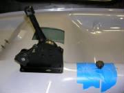
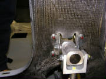
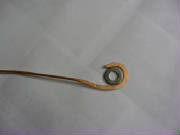
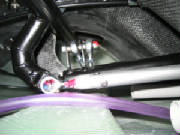
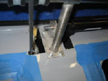

|
Feb 10th, 2007 2.1 hours - Rudder cables and elevator
trim
Now that the fuselage is upright again, I expect work to progress
rapidly. Today I installed the rudder cable guides, elevator trim assembly, throttle/choke assembly and flap handle
assembly.
Here are the forward end of the rudder cable housings, secured
with zip ties and Loctite 460 super glue.
This shows the rudder cable housings emerging on the back side
of the cockpit bulkhead.
This shows the rudder cable guides routed through the first
fuselage bulkhead. Note that the right pilot rudder cable crosses through the center of the bulkhead, where it will
be joined with the right copilot rudder cable, and later connected to the right side of the rudder itself. Similarly,
the left copilot pilot rudder cable passes through the center of the bulkhead to be joined to the left pilot rudder cable,
and later connected to the left side of the rudder.

The throttle/choke assembly and elevator trim assembly installed.
The throttle is installed permanently with red Loctite 262.
I have installed the elevator trim temporarily
until I ask the factory how the trim cable housings are secured to the ends of the trim assembly. I also discovered
that I need to shorten the threaded stud on the trim knob. It now bottoms out in the slider before it clamps down on
the washer to hold the trim at the desired position. Once I have these things sorted out and the assembly mounted permenantly
with Loctite, I will grease the slider assembly with white lithium grease.
This shows the flap handle assembly mounted permanently with
Loctite 262.

This shows the aft end of the flap handle assembly on the back
side of the cockpit bulkhead.
Feb 13, 2007
I received an answer from Tomaz, explaining that the elevator
trim cable outer tubing does indeed fit loosely into the fittings at either end of the cable. One fitting is on the
trim adjustment slider mechanism and the other end is at the elevator trim spring assembly on the fuselage floor behind the
cockpit.
The terminology is Bowden cable, meaning a flexible cable running inside an outer tubing sleeve,
sometimes used for push-pull operations, but always in tension for this particular application.
When the
trim cable is attached at both ends and pulled tight, the Bowden outer tubing is pulled into the fittings at each
end by the tension on the trim cable, so that it cannot escape once assembled. So, all is normal at
this point.
I'm going to wait and install the elevator trim permanently with Loctite until I get the complete
elevator trim mechanism installed behind the cockpit, to ensure that it all hooks up OK. Then I'll put Loctite on
the mounting screws and grease the slider.
Feb 17, 2007 - 1.0 hrs - Rudder pedals
After study of the rudder pedal and brake line installation, and
examination of various pictures in the kit manual and the supplemental photo album, I determined where to cut a slot in the
right side of the fuselage for the right brake line, shown here. The brake line from the brake master cylinder for the
right wheel brake passes through this slot, which allows for rudder pedal position adjustment. The brake line is
protected from chafing by a length of 12mm heavy fuel line that goes over the brake line from the master cylinder through
the slot. I drilled a few large holes to start the slot, then finished the job with a small sanding drum on
my rotary tool.
I then installed the rudder pedal assemblies permanently with
Loctite 262. Note that the pedals on the left have the brake fluid reservoirs.
Next I installed the velcro strips for the seats and carpet, described
on the Fuselage Interior page
Feb 19, 2007 0.5 hours - Install rudder cables in
cockpit
I fed the front section of the rudder cables from the firewall
aft threading them through the S-curved tubes on the rudder pedals, through the outer cable housings under the seats and into
the rear fuselage, where they will later be connected to the cables running back to the rudder.
The forward end of each cable is swaged into
a threaded rod that terminates on the forward side of the firewall.
This shows the cable feeding through the S-curved tubing on the rudder
pedals. This arrangement allows the cable to run through the tube when the pedals are adjusted forward and back to fit
the pilot and copilot. It is a very ingenious design that has been around for decades, and is commonly seen on sailplanes.
Feb 24, 2007 2.0 hours - Attach elevator push rods
I moved the fuselage part of the way out of the garage to get access
to the aft end of the fuselage and vertical stailizer. Now that it's on the wheels, that was easy. The first
challenge was connecting the main fore-aft elevator push rod to the bell crank assembly just forward of the rudder.
The aft end of the push rod is slotted, and there is a bolt that goes through the push rod and captures the bell crank in
the slot. The tricky part is that two 1 mm washers also go in the slot, over the bolt and between the sides of the slot
and the bell crank arm.

After fumbling around a bit, convincing myself very quickly that
it was impossible to accomplish this with fingers or ordinary tools, a few minutes thought brought to mind a quick temporary
tool shown here. It's just a short piece of 14 gauge copper wire that I had laying around the work shop, bent into
the shape you see, and pounded flat with a hammer, so that it's about the same thickness as the washer. The technique
I used then was to insert the bolt, slip the curved wire into the slot under the bolt, and drop the washer into the slot.
The washer is now resting on the wire and the side of the bolt. Then I backed the bolt out until the washer dropped
into place (constrained by the wire) and pushed the bolt through it. I then repeated the process in the slot on the
other side of the bell crank. Maybe there's an easier way to do this, but it worked with materials that I had on
hand.
Then I installed the outer washer and nylon lock nut, secured
with Loctite 262.
In the photo the upper elevator push rod is installed temporarily until I get confirmation on
the construction sequence. The top of the push rod goes through a hole in another rudder bulkhead, through which
it appears that I will also have to reach to install some nuts attaching the upper rudder hinge bracket. I'm thinking
that I will need to get the elevator push rod out of the way to make that installation less troublesome.
Feb 27, 2007 1.5 hours - Elevator push rod and rudder
control arm
Received answers from Tomaz on the rudder bracket installation jig, including a
drawing of the factory jig, clarifying the assembly sequence for the elevator push rod and rudder.
First, I referred to the pictures from Tomaz and enlarged the hole in the top bulkhead of the vertical
stabilizer as shown here looking down from above the stabilizer. The hole was originally round, but needs to be expanded
to allow access for installing nuts on the rudder support bracket attach bolts. These bolts will penetrate the aft stabilizer
spar just below the bulkhead.
Then I completed attaching the upper elevator push rod to the
ball crank arm, using Loctite 262 on the nut.
I installed the lower rudder support bracket, with Loctite
on the attach bolts, which screw into nut plates on the other side of the bulkhead. I installed the rudder stop threaded
studs and nylon lock nuts. Finally, I installed the rudder control arm on the lower support bracket, after greasing
the brass bushing, using Loctite on the nut. I marked all nut and bolt heads with red paint.
Feb 28, 2007 1.5 hours - Rudder cables
I cut off the excess nylon tubing that carries the rudder cables
to the aft fuselage, so that it extends about three inches forward of the fuselage bulkhead. I fed the left and right
rudder cables through the tubing to the rear of the aircraft, and positioned the thimbles about half way between the bulkheads,
as instructed in the kit manual.

I then marked where the rear thimbles are to go on the aft end
of the cables, wrapped each cable around a thimble and double swaged the ends, using my swage tool, shown here.
I cut off the excess cable with a cold chisel, and flattened
each thimble a bit using a hammer that the anvil on my bench vise, to that the thimble is thinner than the 5 mm bushing that
will go inside the thimble in the rudder control arm. This is necessary to allow the thimble to pivot freely within
the control arm as the rudder moves.
Mar 1, 2007 1.5 hours - Rudder cables
I removed a bit of the inside lip of the fuselage side at the rear
to clear the rudder control arm and the rudder cable thimbles. I greased the thimbles, inserted the 5 mm bushings into
the control arm with the thimbles, and installed a bolt, washer and nyloc nut to secure each cable, using Loctite 262.
I then devised a way to secure the rudder control arm with a couple
of scraps of wood and a c-clamp, to keep the arm from moving while hooking up the rudder cables inside the fuselage.
Mar 2, 2007 2.5 hours - Rudder cables

I secured the rudder pedals in cockpit to keep them in alignment while completing
the rudder cable installation.
I installed thimbles with double swage collars on each of the four rudder cables
in the rear fuselage using the following procedure.
First slide two swage collars on the cable.
Then form a loop in the end of the cable by feeding the end back
through the thimbles.
Paying attention to the mark on the cable for the thimble position,
pull the loop tight around a thimble and slide one of the swage collars up to the thimble.
Take one bolt out of the swage tool, slip it around the cable,
reinsert the bolt and snug up both bolts enough to clamp the collar and begin to put some friction on the cable, but not so
tight as to begin compressing it onto the cable. Pull the cable tight and ensure that the collar is pushed up close
to the thimble, with the cable tight around the thimble. Check that the collar is centered in the tool.

Now tighten the swage tool until the two halves are in contact with
each other. This ensures that the collar is fully compressed and will hold the cable securely.
Then cut off the excess cable end with a cold chisel, shown
here. To do this, I put a pillow in the rear fuselage to absorb the shock, and put my bench vise on the pillow.
The pillow here is a contour foam material that does a great job of absorbing the shock
cleanly with no bouncing around. After carefully positioning the cold chisel to cut only
the free end of the cable, one or two sharp blows with a hammer will cut the cable cleanly. Actually, the heavy vise
absorbs the initial shock and the pillow then distributes the momentum over a large area so as not to damage anything.
It's like the trick where someone holds a slab of concrete on their chest while someone else breaks the concrete with
a sledge hammer -- not magic, just physics.
I then connected each pair of left and right cables to the single cables coming
forward from the rudder with 6 mm bolts, large washers and bushings, with Loctite
262 on the nuts.
Finally, I removed the cable slack by tightening the nuts on the front side of the
firewall, removed all the clamps and checked the system for full pedal travel.
The cable adjustment doesn't
achieve real tension in the cables -- tension is achieved when the pilot steps on the rudder pedals. When your feet
are removed, the rudder pedal return springs take up the slack and keep the pedals from falling backward. The cable
length adjustment at the firewall determines the fore-aft resting position of the pedals. I asked Tomaz about the proper
position for the rudder pedals. He instructed me to tighten the cables until the tops of the pedals are inclined back
about 5 mm from the point where the pedals are pendicular to the guide tubes.
Mar 4, 2007 3.5 hours - Complete elevator trim
installation
I installed the elevator trim mechanism in the aft fuselage
as instructed in the kit manual.
After attaching the trim springs, I positioned the cables
with the trim knob centered in the cockpit, and the trim lever also centered, ensuring that the outer bowden housings were
fully seated in the fittings at each end. Then, with the cables pulled tight, I tightened the screw on top of the lever,
using Loctite 262, securing the trim cables to the mechanism. I then applied three layers of heat shrink tubing to the end
of each cable about three inches from the attach point, to keep the ends of the cable from fraying. After that, I cut
the excess cable with my cold chisel, as described above for the rudder cables.
I then removed the bolts holding the trim slider mechanism
in the cockpit, applied Loctite 262 and tightened them again for permanent installation. Finally, I applied grease to
the interior of the slider mechanism and covered the slot with tape to keep dust and dirt out during the remainder of the
construction.
At this point, the trim knob
still will not clamp fully down on the slider, with the result that the slider moves fore and aft when the elevator push rod
is moved. The kit manual clearly indicates that the slider is supposed to lock in position when the knob is tightened.
I need to get an explanation from Pipistrel on how this is supposed to work. The trim knob seems to be used to both
clamp the ends of the cables within the slider, as well as keep the slider from moving after the trim is adjusted. But
I don't see how it can do both at the same time. There is something I don't understand here, but I'm sure
Tomaz can straighten me out.
Mar 9, 2007 1.2 hrs - Clarification and
Fix of Trim Slider Assembly
Tomaz sent an email today with these pictures and an explanation
that solved my problem. This picture shows a side view of the trim slider mechanism, with the trim knob screwed into
the slider that runs inside an outer tube that you see here. The trim is adjusted by loosening the knob, moving the
knob, then retightening to retain the new trim setting.
This is the trim knob disassembled, showing a stand-off sleeve
and the brass washer that is clamped against the outer tube to lock the trim setting. The threaded end of the knob goes
into the slider and moves back and forth in a slot milled into the top of the outer tube. The threaded end of the knob
does not secure the cables in the slider as I have been assuming.
Here is the key piece of information that I needed. You
can see in this end view of the trim slider that the hole through which the trim cables pass is eccentric. The slider
is supposed to be installed with this hole toward the bottom. The trim knob can then screw far enough into the slider
to clamp the washer against the outer tube and lock the trim setting. The trim cables extend all the way through the
slider from each end, and have small beads formed on the ends that prevent them from pulling back through the slider, so nothing
else is needed to retain the cables in the slider once tension is set in the trim control loop.
Today I was able to take a closer look at my trim slider, and fix
the problem. First, the slider was inverted, so that the cables passed through the slider toward the top, rather than
the bottom. This is what made the trim knob tighten against the cables before it clamped the brass washer against the
tube to lock the trim setting.
Part of what confused me was that after I first installed the slider mechanism, I could see that the cables passed
through the slider and extended beyond the ends by a few centimeters. They slid back and forth through the slider easily,
so I assumed that the threaded shaft was what locked them in place. I never thought to check if the cables would be
contained by the slider itself if I just pulled them tightly from the ends.
So, after rotating the slider 180 degrees within the tube
so that the cables pass through the slider on the bottom, and then reinserting the trim knob from the other side of the slider,
the knob locks the slider in position as intended. I could then pull the trim cables up tight into the slider, where
they remained fixed once the slack was removed. After that, it was simple to loosen the cable clamp on the
trim spring lever arm and pull the resultant slack out of the trim control loop. With that done, the trim works normally.
Mar 17, 2007 0.6 hours - Reroute elevator trim cables
While reviewing the photos from Pipistrel, I noticed that the trim
cable bowden housings should be routed through the center fuselage bulkhead, not draped over the edge. This will also
be necessary to accommodate the baggage compartment hard enclosure that I intend to install later. So, I disconnected
the cables from the trim spring mechanism, drilled 6 mm holes through the bulkhead, and routed the bowden housings through
the holes. After that, I reconnected and re-tightened the trim cables, using Loctite 262 on the cable clamp. I then
replaced the heat shrink tubing that I had to remove from the ends of the cables when I disconnected and rerouted them.
April 6, 2007 5.0 hours - Install control stick assembly
After studying the manual and the components, it was fairly clear how things are supposed to go together.
First, I used my flex-shaft angle drill to drill a drain hold in the fuselage floor at the low point
just forward of the landing gear strut.
I inserted the central control rod through the cockpit tunnel from the rear and bolted the supporting front
rod end to the carbon support member between the control stick openings. I then bolted the aft end of the control rod
to the flaperon handle assembly. I used blue Loctite 243 on all the connections in this section. I also marked
all the nuts and bolt heads with red paint as I installed them.
The control stick support tube goes left-right under the cockpit floor. It is mounted at each end
by a spherical bearing in a flange assembly. The holes for the flange assembly on the right side were marked faintly
in the cockpit floor gel coat, but not on the left. The mounting flanges have to be removed from the support tube in
order to slip it under the floor through the control stick openings. By mounting the spherical bearing on the right
side, assembling the support tube to the bearings and taking some careful measurements, I was able to locate where the
holes for the left mount were to be drilled.
I also had to relocate the fuel lines to keep
them away from the control linkage.

There is no play allowed between the support tube and the mounting
flanges, so if the holes are off even slightly, there will be some force applied to the spherical bearings when the mounting
screws are tightened, making the controls stiff. I got my holes just about exactly right, but when I tightened the screws,
I still got some binding, as the kit manual predicted. I discovered that the problem was that the left mounting flange
was interfering with the radius between the cockpit floor and the fuselage side wall, so I ground off a bit of material from
the end of the mounting flange. Also as the kit
manual indicated, I had to remove some material from the edge of the left control stick opening because of interference with
the control stop.

I then attached the threaded rod end bearing to the elevator push
rod and the arm on the control stick mounting tube. I followed the suggestion in the kit manual to back off the stop
nut three turns from the end of the threads and tightened the connection, after applying Loctite 243. I then marked
the nuts with red paint.
I mounted one stick temporarily to check movement, but did not connect the linkage, since the sticks will
be in the way of a lot of remaining work in the cockpit area.
These steps don't seem
like they should take five hours to complete, and I could do it faster the next time, but I needed to install and remove the
parts multiple times to get the mounting holes located correctly, adjust the clearances and complete the assembly. It
is also very tight working under the cockpit floor, mostly by feel, with very limited room to get the nuts and bolts started
and swing a hex wrench. The camera shots make it look like there is plenty of room, but they were also taken by feel,
since with your hand reaching through the opening the view is blocked so you can't see very much.
July 18th, 2007 5.0 hours - Control sticks and flaperon
linkage
Mounting and adjusting the control sticks requires that the flaperon pushrods first be jigged at the neutral position.
The kit manual describe first installing the torque tubes, connecting them to the vertical pushrods, then jigging them in
position. I found, however, that by delaying the torque tube installation and unscrewing the rod end bearings to nearly
full length, the top bearings could be extended until they just cleared the fuselage top, where I used a 6 mm drill bit to
jig them at that position.
This allowed me to install the control sticks and adjust the linkage until they were
vertical with the aileron linkage fixed at the neutral position.
|
| Unscrew rod end bearings nearly all the way |
|
| Adjust upper rod end bearings until flush with top of the fuselage, then insert a 6 mm drill bit |
Three important points about the control stick linkage: (1) The two push rods that attach to the bottom of the control
sticks are different lengths. The shorter push rod goes to the left stick and the longer to the right. (2) The
spacers that go on the bolt at the bottom of the stick where the push rods attach are also different lengths. On the
left stick the longer spacer goes to the back. On the right stick the longer spacer goes to the front. (3) The
left push rod attaches to the front fitting on the center torque tube and the right push rod attaches to the back fitting
on the center torque tube.
After mounting the control stick on the cross tube, the push rods are connected to the bottom of the stick. I used a
suggestion from George Powers for that step. I cut a short length of 1/16" scrap wood to a width that made it a
friction fit through the spacers and rod end bearing, cut to length so that it fits entirely within the assembly. The
piece of wood then held the spacers in position while I slipped the rod end bearing between the legs on the bottom of the
control stick. Pay close attention to the kit manual instructions for connecting the push rods to the left and right
control sticks, and for positioning the spacers, which are different lengths. It will be necessary to disconnect the
push rods and adjust the rod end bearings a few times to get the sticks vertical while the flaperon push rods remain jigged.
After the control sticks are connected and vertical, tighten the lock nuts on the control stick push rods. When you
do this, take care to rotate the rod end bearings so that they allow the rod to twist freely on the spherical bearings throughout
the full range of motion of the control stick.
July 30th, 2007 4.5 hours - Control sticks and flaperon
linkage
Note: Before mounting the flaperon
torque tubes, check the fit of the end fittings with the cross bars in the ends of the flaperons. In my kit, the fit
was too tight, but I didn't discover this until I was mounting the wings. I had to remove the torque tubes from the
fuselage and open them up with a file, then reassemble them.
Next I mounted the flaperon torque tubes. They are secured to the support bearing at the center of the fuselage.
A bolt goes through end plate of one torque tube, then through the center support bearing. The end plate of the other
torque tube goes over the bolt end and a special nut is screwed onto the bolt to hold everything together. The trick
is holding the bolt in place with a 22" long 5 mm allen wrench through a torque tube from one side while screwing on
the special nut with another 22" long 4 mm allen wrench through the other torque tube. I found that a 1/4"
drive socket extension fits inside the torque tubes and I was able to find some metric allen bits that fit a 5/16" socket.
By fitting the socket extensions together I was able to reach in from one end of the torque tube assembly to screw on the
nut while my wife held the bolt in place from the other end. I used some instant glue on the joints of the extensions and
sockets to that they wouldn't come apart inside the torque tubes, and I held the bolt and nut on the allen bits with some
plumber's putty so they would not fall off while maneuvering them into place. In my kit, I had to enlarge the torque tube opening on the right side of the fuselage slightly to allow the torque
tube to pass through.
|
| Torque tube tie bolt and special nut |
|
| I found these socket head allen wrenches and removed the bits, which fit a 5/16" socket |
|
| Flaperon torque tubes and tools used to bolt them together |
|
| Allen wrench extension used to insert the bolt into the left torque tube |

|
| Bolt extends through the center mount bearing |
Next I removed the drill bit that was jigging the flaperon push rods and screwed the rod ends into the push rods until
a few threads showed. I then attached the top ends of the push rods to the flaperon torque tubes. Final adjustment
of the push rod lengths will come after the wings are installed. Later, after mounting the wings and checking flaperon
movement, I found that the control rods were too long to allow me to adjust the flaperons to neutral. See the Wings page for a description of how I fixed this.
|
| Torque tubes connected to push rods |
I shrank the large heat shrink tubing over the flap handle, then I slid the foam hand grip over the flap handle.
June 18th, 2011 3.5 hours - Spoiler controls
After the wings were installed and the flaperon controls
were adjusted (see Wings page), I installed the spoiler control. The kit manual doesn't say much about this installation, but the Illustrated
Parts Catalog shows the parts in detail and the Service and Repair Manual describes the assembly steps. I slid the end fittings onto the cross tube and placed it in position across
the top of the cockpit, with the end fittings protruding from the holes on either side. I closed the spoilers on each
wing, slid them back into the fuselage and engaged the controls, then inserted the spar pins. I slipped the spoiler locking lever over the control arm and found the point at which the lever would engage the
locking slot on the wing mount structure, with enough clearance to unlock the lever to release the spoilers. Holding
the lever in that position, I drilled a 5 mm hole for the cross pin on each side of the lever, the slid the cross pin in place
temporarily. I drilled a 3 mm hole through the bottom
of the locking lever into the control arm to determine the place to install the lever spring. Then I removed the lever
and opened the hole in the control arm to 8 mm and inserted the tube that holds the lever return spring. I installed
a 3 mm rivet in the locking lever to hold the bottom of the spring, then slid the locking lever onto the control arm, put
the spring into its tube and over the rivet, and inserted the cross pin to mount the locking lever, securing it with circlips
on each end.
After I finished riveting the fittings onto the ends of the
spoiler control, I noticed to my dismay that the slots in the end fittings were not aligned with each other. After some
examination, I determined that the left spoiler must have popped up when I was mounting the wings, and I had failed to notice
it. I have an idea about how to repair the handle, which I will discuss with a member of our EAA chapter who is a professional
welder.
June 24th-26th, 2011 1.5 hours - Spoiler handle
repair
I talked to a member of our EAA chapter
about the mis-drilled holes in the spoiler handle. He is a welder by profession, and I expected he would be able to
offer a repair solution. We decided that it was feasible to fill in the holes with filler rod and an oxy-acetylene torch,
so I disassembled the handle and sanded all the paint off the handle around the holes in preparation for the welding job.
Then I re-riveted the fitting onto the left end of the handle, which were drilled correctly. The
chapter member expertly filled the mis-drilled holes in the spoiler handle and returned it. I filed the filler welds
to match the outside surface of the tubing and repainted the handle with Rust-oleum primer and automotive lacquer, which was
a good match with the original finish.
I then carefully aligned the end fittings, re-drilled the holes and re-riveted
the fitting that had been mis-aligned.
July 1st, 2011 1.8 hours - Install spoiler handle
I pulled the wings out of the fuselage,
slid the circular plastic stops over the ends of the spoiler handle and slid the handle into position, hooking it to the spar
bracket. Then I retracted the spoilers on each wing and re-mounted the wings, engaging the spoiler linkage.
Checking the spoiler control movement, I saw that the spoilers were retracted and locked with the handle clip hanging a
few millimeters below the spar bracket, requiring additional force to lock the handle closed, so they need some final adjustment.
I had wondered about the function of the eccentric cams at the spoiler control arms in the wing roots. At this point
I realized that the cams allow the locked position of the retracted spoilers to be adjusted until the latch engages with no
residual force on the handle -- a very ingenious design feature.
July 3rd, 2011 0.7 hours - Install spoiler handle bumper
I drilled and tapped a hole for 5 mm threads
in the center flaperon support bracket for the rubber spoiler hande bumper, and installed the bumper, securing it with Loctite.
July 9th, 2011 1.5 hours - Adjust spoiler control stop
cams
With the wings off for drilling the wing
root drain holes, I adjusted the lock position of the spoiler linkage.
Since the wings were resting on the
dollies and aligned with the fuselage mounting points, I was able to use my digital level to measure the angle of the slot
in the spoiler control handle fitting with the angle of the cross pin in the spoiler torque tube at the wing root. I
could then adjust the rotation of the stop cam until the angles matched. I then slid each wing into position by itself
to confirm that for each wing the spoiler handle latched as the spoiler in that wing closed.
After both
spoiler stop cams were adjusted and secured with Loctite, I installed the wings for what should be the final time in preparation
for my first flight. I re-installed the center spar bolt and the spar pin bolts, and marked them with torque seal.
|
| Wing root spoiler link and stop cam |
|
| Spoiler control link -- the 8 mm drill in the slot allows me to measure the angle |
November 6th, 2011 3.5 hours - Install autopilot servo arms
I began fabricating 4130 steel
parts to add servo arms to the roll and pitch tubes, following the Pipistrel Illustrated Parts Catalog, the kit manual and
some photos of the factory autopilot installation that Jonas Boll provided. I also used measurements taken from my aircraft.
November 20th, 2011 2.1 hours - Fit roll servo arm
I finished cutting the 4130 steel
tube to mount the roll servo arm on the roll torque tube, then assembled the roll servo arms temporarily with hot melt glue
and installed the servo linkage to check the fit and positioning.
December 26, 2011 1.3 hours - Fabricate pitch servo
control arm
I fabricated a jig from aluminum angle and rare earth magnets
to hold the pitch control servo arm in position on the elevator torque tube for tack welding. The magnets I had on hand
were just the right size for a press fit into 1/4" holes in the aluminum jig pieces. After the arm is tack welded,
I will use rare earth magnets to hold the brace in position for tack welding, after which the joints can be fully welded.
I removed the paint from the torque tube where the arm will be
attached and tested the fit of the jig and the servo arm pieces.
January 26th, 2012 1.8 hours - Install pitch
servo control arm
I received the pitch control torque tube from the welder with the
pitch servo arm welded in place. I primed and painted it, then installed it in its original position under the cockpit
floor and checked the linkage with the servo.
January 28th, 2012 0.6 hours - Paint welded roll servo control arm
I received the flaperon torque tube from the welder with the roll
servo control arm welded in place. I primed and painted the bare metal areas.
January 29th, 2012 4.0 hours - Re-install
flight controls and connect autopilot servo linkage
I installed the flaperon torque tube, then connected and adjusted
the flaperon push rods, control sticks, roll push rods, and autopilot servo push rods. I checked everything for full
range of motion, secured all the connections with Loctite 243, and marked the bolts with torque seal.

|
| Pitch servo linkage |
February 4th, 2012 2.5 hours - Adjust servo linkage and calibrate servos
I removed some slack from the elevator trim cables, adjusted the
servo linkage for full range of control motion while remaining within the servo mechanical limits, then completed the Dynon
calibration menus for servo direction and range of motion. The Dynon menus include adjustments for servo torque to ensure
that the autopilot can by physically overpowered by the pilot, plus other values for gains, climb and descent rates, airspeed
limits, etc. The final autopilot adjustments will be made in flight.
February 12th, 2012 0.7 hours - Install flaperon
pushrod cover
I placed the flaperon pushrod cover on top of the fuselage over the pushrod openings and GPS antenna, then drilled
holes and secured it with silicone caulk and screws.
|